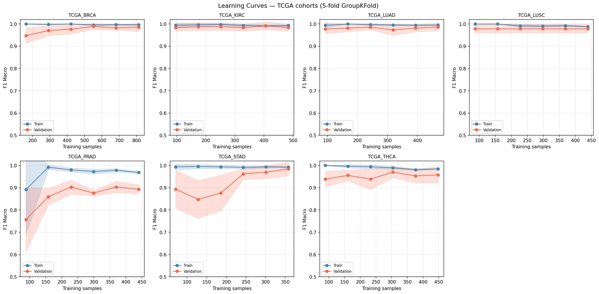

Identification of Biomarkers from Gene Expression Data
M.Sc. Thesis in Computer Science · Rome, Italy · 2026
Abstract—High-throughput RNA sequencing (RNA-seq) data from the TCGA project enables systematic identification of tumour-specific transcriptomic biomarkers. We present a reproducible pipeline for binary tumour-vs.-normal classification and biomarker discovery across seven cancer cohorts (BRCA, KIRC, LUAD, LUSC, PRAD, STAD, THCA) using exclusively decision-based algorithms: Random Forest [1] with 5-fold GroupKFold patient-level cross-validation and interpretable Decision Trees [2]. Feature selection is performed per fold on training data only (top-500 genes by variance from a 1,500-gene pool) to prevent information leakage. Class imbalance is corrected by SMOTE [3] applied exclusively to the training fold. RF achieves F1 Macro 0.895–0.988 across cohorts (ROC-AUC 0.971–1.000); permutation tests (100 permutations) confirm the signal is biological (p < 0.01 for all tested cohorts). Pan-cancer multi-class classification over 6,585 tumour samples across 8 types reaches accuracy 0.968 and F1 Macro 0.971. Biomarkers are validated via SHAP [4], pathway enrichment through Enrichr [5], [6], and comparison against known oncogenic drivers from COSMIC [7] and Bailey et al. [8]. As an exploratory extension, GTEx v8 healthy samples [9] are used to train a tumour-vs.-healthy classifier that achieves F1 Macro ≥ 0.990 and assigns mean tumour probability < 4% to healthy donors.
Index Terms—Biomarker discovery, gene expression, RNA-seq, TCGA, random forest, decision tree, SHAP, interpretable machine learning.
I. Introduction
The objective of this work is to identify differentially expressed genetic biomarkers across multiple tumour cohorts from The Cancer Genome Atlas (TCGA), using exclusively decision-based algorithms: Random Forest [1] and Decision Trees [2]. The analysis is based on RNA-seq TPM data downloaded through the Genomic Data Commons (GDC) REST API.
TCGA provides multi-cohort RNA-seq data with matched clinical annotations, and Hoadley et al. [12] established cell-of-origin patterns across 33 tumour types. Random Forest and Decision Trees are widely adopted for high-dimensional omics data owing to their resistance to collinearity and native feature-importance scoring. This study combines strict patient-level cross-validation, multi-cohort comparison across seven cancer types and an exploratory healthy-tissue validation layer based on GTEx [9].
II. Materials and Methods
A. Data and Database
RNA-seq files are downloaded from the GDC API and stored in a PostgreSQL database (tables Patients, Samples, SampleTypes, Biomarkers, Measurements). For every project with at least 100 tumour samples, the 1,500 most variable genes are pivoted in-database into one analysis matrix per cohort, yielding seven cohorts: BRCA, KIRC, LUAD, LUSC, PRAD, STAD and THCA.
B. Preprocessing
Expression values are transformed as log2(TPM + 1) to stabilise RNA-seq variance; residual missing values are imputed with the column median. The target is 0 for Solid Tissue Normal and 1 for Primary Tumor.
C. Cross-Validation and Leakage Prevention
GroupKFold partitions samples by patient, so training and test sets never share an individual. Within each training fold the top-500 genes by variance are re-selected, and SMOTE [3], [11] is applied to the training portion only; the test set is never resampled.
D. Models
The Random Forest uses 250 trees, maximum depth 7 and min_samples_leaf = 5, implemented with scikit-learn [10]. Decision Trees with min_samples_leaf = 100 provide human-readable if–then rules. A pan-cancer model classifies the tissue of origin across eight tumour types.
E. Interpretation and Validation
Gene-level contributions are computed with SHAP [4]; pathway enrichment uses Enrichr [5], [6]; selected genes are compared with COSMIC [7] and Bailey et al. [8]. Permutation tests and learning curves assess whether performance reflects biological signal rather than memorisation.
III. Results
A. Tumour vs. Normal Classification
Table I reports Random Forest performance per cohort. All cohorts reach ROC-AUC above 0.97. PRAD shows the lowest normal-class recall (0.807), explained by severe class imbalance (51 normal vs. 500 tumour samples); learning curves confirm data scarcity rather than memorisation.
Table I
Random Forest Performance per Cohort (5-Fold GroupKFold)
| Cohort | Normal | Tumour | F1 | AUC | Rec. N |
|---|---|---|---|---|---|
| KIRC | 72 | 533 | 0.988 | 0.989 | 0.985 |
| BRCA | 93 | 923 | 0.986 | 0.999 | 0.978 |
| LUAD | 59 | 528 | 0.982 | 1.000 | 0.982 |
| LUSC | 51 | 498 | 0.979 | 1.000 | 0.980 |
| STAD | 36 | 412 | 0.977 | 0.998 | 0.971 |
| THCA | 58 | 503 | 0.956 | 0.996 | 0.930 |
| PRAD | 51 | 500 | 0.895 | 0.971 | 0.807 |
F1 = validation F1 Macro; Rec. N = recall on the normal class.
B. Pan-Cancer Classification
The multi-class model reaches accuracy 0.968 and F1 Macro 0.971 over 6,585 out-of-fold tumour samples (Fig. 1), confirming that the transcriptomic profile is highly specific to tumour type, consistent with [12]. The main off-diagonal cluster (LUAD–LUSC) reflects their shared histological origin.

C. Biomarker Overlap
No gene is shared across all seven tumour types, confirming tissue-specific transcriptomic signatures. LUAD and LUSC share the highest pairwise overlap (23 of their top-50 genes), while KIRC and THCA are the most tissue-specific (Fig. 2).

D. Interpretability
SHAP validates the Random Forest importance ranking with biologically coherent directionality (Fig. 3). Pathway enrichment links the biomarkers to known cancer mechanisms: ECM remodelling (BRCA, STAD), Wnt signalling (KIRC), cell-cycle G1/S regulation (LUSC), and “Prostate cancer” as the top KEGG term for PRAD (adj. p = 1.47×10−2).

E. Generalisation
Training and validation curves converge by 60–70% of the data (Fig. 4), ruling out severe overfitting; permutation tests yield p < 0.01 for all tested cohorts. In the exploratory GTEx setting, the tumour-vs.-healthy classifier reaches F1 Macro ≥ 0.990 and assigns healthy donors a mean tumour probability below 4%.

IV. Conclusion
TCGA RNA-seq data allows tumour vs. normal classification with F1 Macro 0.895–0.988 using decision-based models under strict patient-level validation, and pan-cancer classification with accuracy 0.968. A natural extension is graph-informed biomarker discovery, in which protein–protein interaction networks refine the importance ranking towards functionally coherent gene sets.
References
- L. Breiman, “Random forests,” Mach. Learn., vol. 45, no. 1, pp. 5–32, 2001.
- L. Breiman, J. H. Friedman, R. A. Olshen, and C. J. Stone, Classification and Regression Trees. Belmont, CA, USA: Wadsworth, 1984.
- N. V. Chawla, K. W. Bowyer, L. O. Hall, and W. P. Kegelmeyer, “SMOTE: Synthetic minority over-sampling technique,” J. Artif. Intell. Res., vol. 16, pp. 321–357, 2002.
- S. M. Lundberg and S.-I. Lee, “A unified approach to interpreting model predictions,” in Proc. NeurIPS, 2017, pp. 4765–4774.
- M. V. Kuleshov et al., “Enrichr: A comprehensive gene set enrichment analysis web server 2016 update,” Nucleic Acids Res., vol. 44, no. W1, pp. W90–W97, 2016.
- E. Y. Chen et al., “Enrichr: Interactive and collaborative HTML5 gene list enrichment analysis tool,” BMC Bioinform., vol. 14, p. 128, 2013.
- Z. Sondka et al., “The COSMIC Cancer Gene Census: Describing genetic dysfunction across all human cancers,” Nat. Rev. Cancer, vol. 18, no. 11, pp. 696–705, 2018.
- M. H. Bailey et al., “Comprehensive characterization of cancer driver genes and mutations,” Cell, vol. 173, no. 2, pp. 371–385, 2018.
- GTEx Consortium, “The GTEx Consortium atlas of genetic regulatory effects across human tissues,” Science, vol. 369, no. 6509, pp. 1318–1330, 2020.
- F. Pedregosa et al., “Scikit-learn: Machine learning in Python,” J. Mach. Learn. Res., vol. 12, pp. 2825–2830, 2011.
- G. Lemaître, F. Nogueira, and C. K. Aridas, “Imbalanced-learn: A Python toolbox to tackle the curse of imbalanced datasets in machine learning,” J. Mach. Learn. Res., vol. 18, no. 17, pp. 1–5, 2017.
- K. A. Hoadley et al., “Cell-of-origin patterns dominate the molecular classification of 10,000 tumors from 33 types of cancer,” Cell, vol. 173, no. 2, pp. 291–304, 2018.